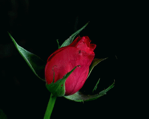
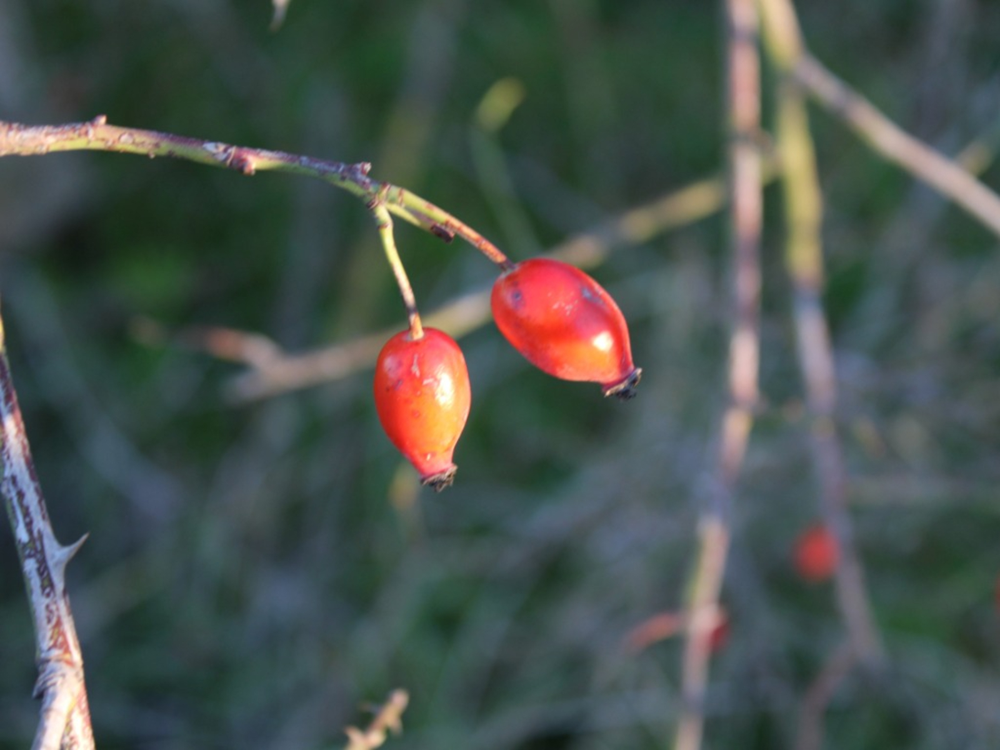
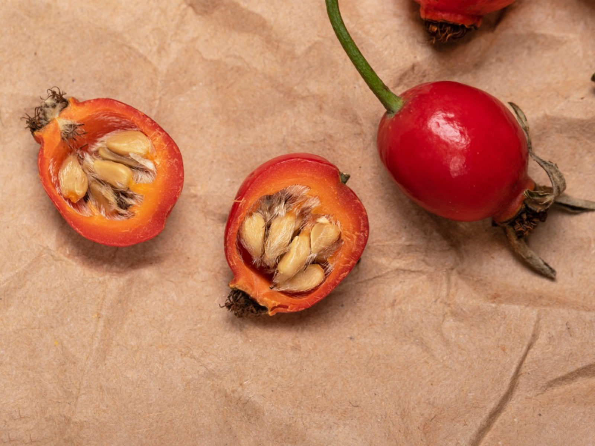
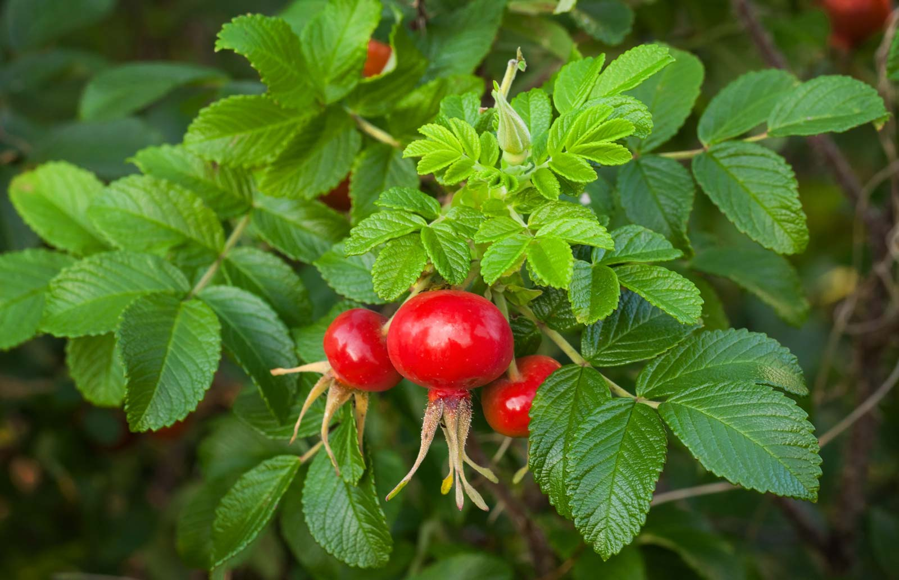
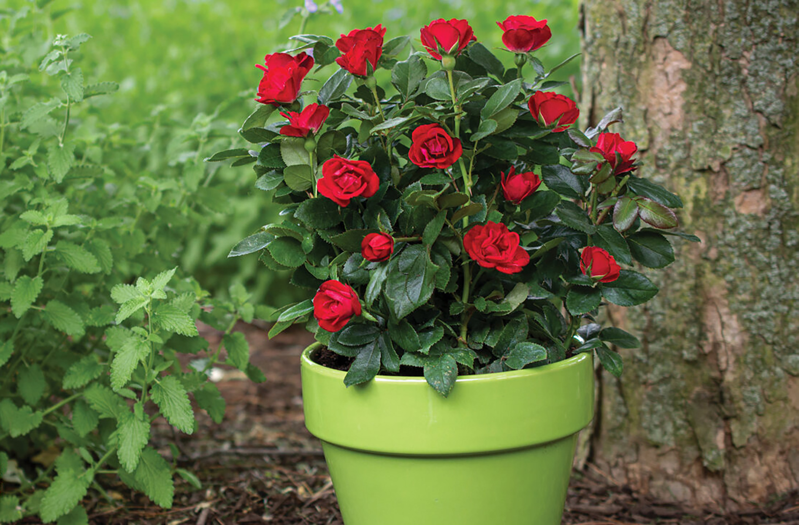
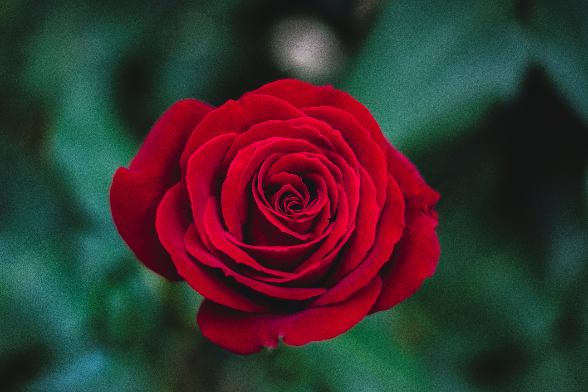

The life of a Rose
By Nima Yeganeh
Roses start from the seed.
The seeds of roses come from rose hips which are essentially the fruit that are produced after the flower fades. Male and female roses both contain reproduction parts, the ovaries and stamens. Many gardeners prune off the hips, but if they are left on the bushes they become ripe after about four months. The hips contain rose seeds which can be harvestested by cutting open the rose hip and removing the seeds from the shell.

Inside the seeds
Slicing the fruit open exposes the flesh and the seeds. These seeds are the way the rose reproduces, as they are spread around when the rose reaches the end of it's life cycle. There are multiple seeds in each fruit, as pictured.

The seeds grow into a plant.
The rose seeds can be planted or spread naturally to create rose bushes. These seeds require quite a bit of care to ensure germination, some of them even need to be placed in the refrigerator! Rose hips can be used as decorative ornaments and are also used to make rose hip tea.

The rosebush is here.
This is the rosebush. It takes around six weeks for rose seeds to germinate and in some cases it even may take many months. It depends on many factures including the type of rose, climate and dirt. After around six weeks the tiny rose seedlings produce their first bloom! This starts as a bud surrounded by sepals, and when the bud opens, the sepals resemble small green leaves at the flower's base.

The rose.
The female part of the flower is the pistil and contains four parts, the style, sigma, ovary and the ovules. The style is an elongated tube at the center with the stigma at its tip. The stigma receives the pollen from the male stamens and is then transferred down the style and to the overy, a hollow cavity at the base of the flower that contains the ovules. The ovules then contain egg cells. The stamen, or male part of the flower is composed of the filaments which supports the anthers, which contain the pollen of the flower. Pollination occurs when temperatures are lower than 29C. Once pollinated, the flower looks the same but its ovules will be ready to become the hips once the flower fades. After the flower fades, the cycle continues and the steps continue in the same order from the start. That is the life cycle of a rose!
